Hasat Galerisi
Tarlalarımızdan ve seralarımızdan gerçek anlar: canlı, doğal ve yöresel ürünler.
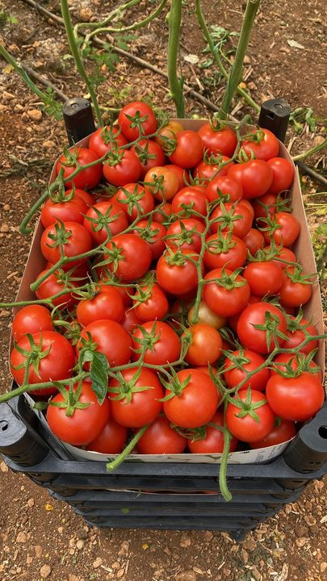
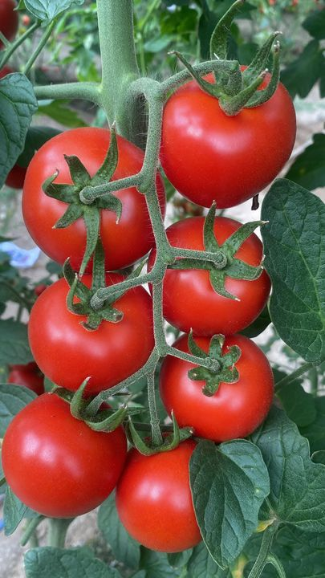
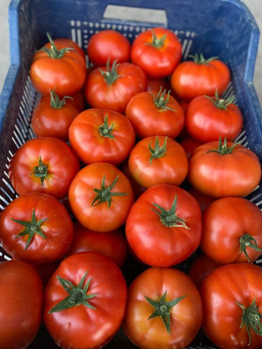
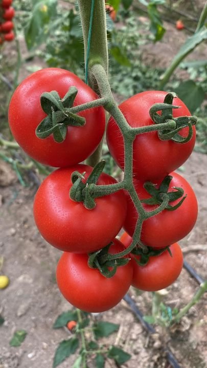


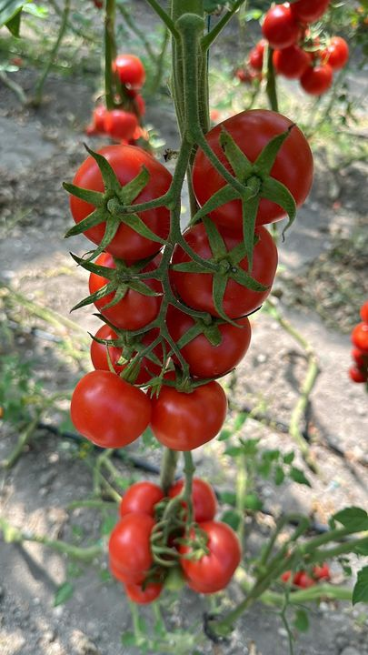


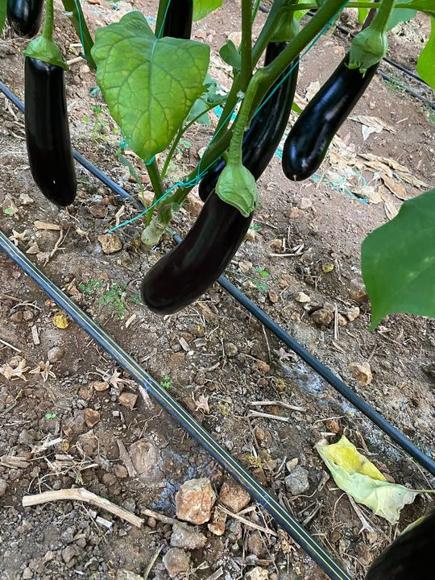
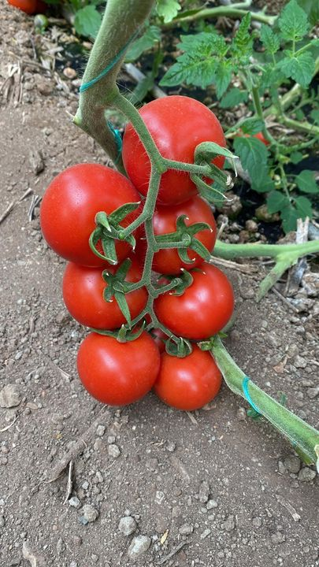
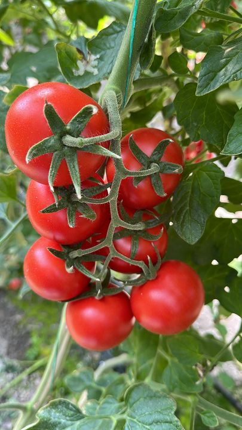
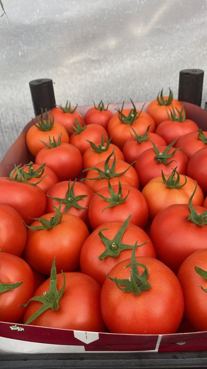
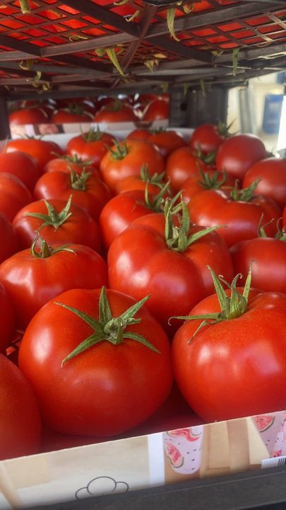
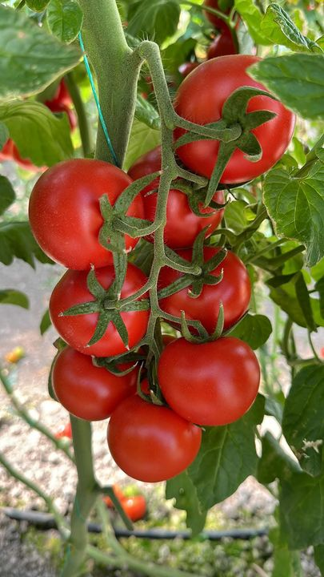
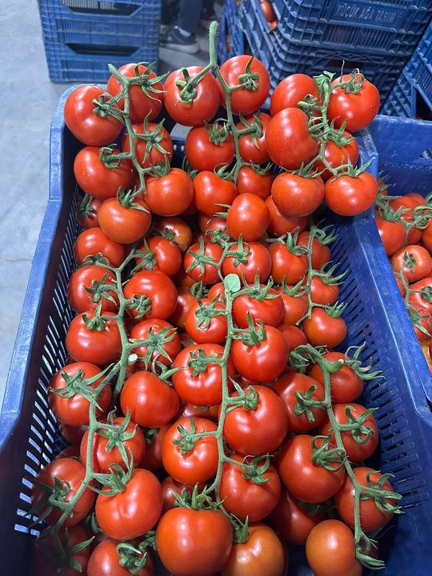
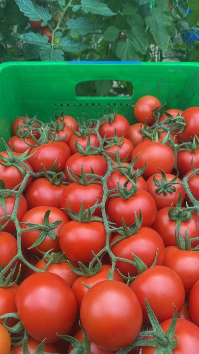
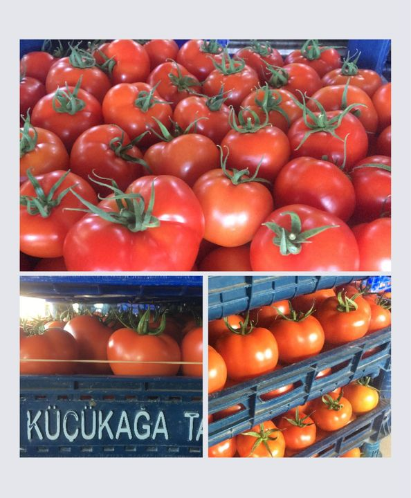
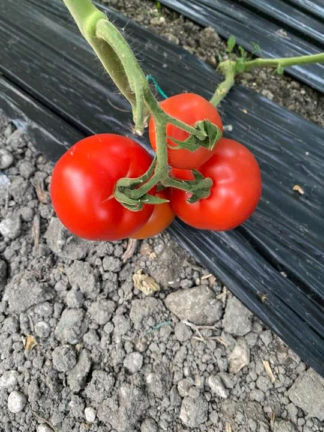
Toptan sipariş ve fiyat bilgisi için bize ulaşın
Ürün, miktar ve teslimat yerini yazın; size en kısa sürede dönüş yapalım.